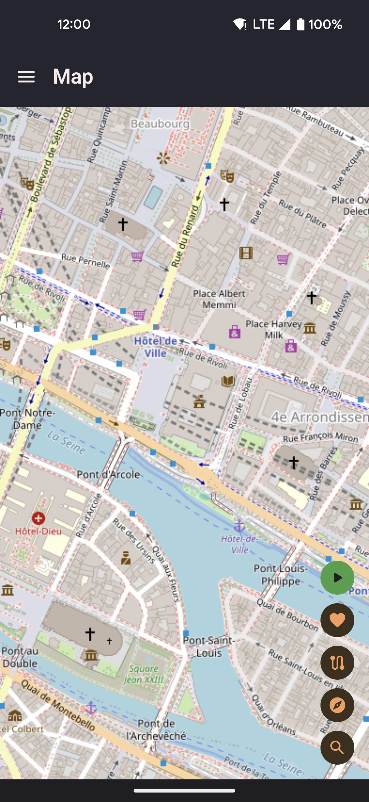
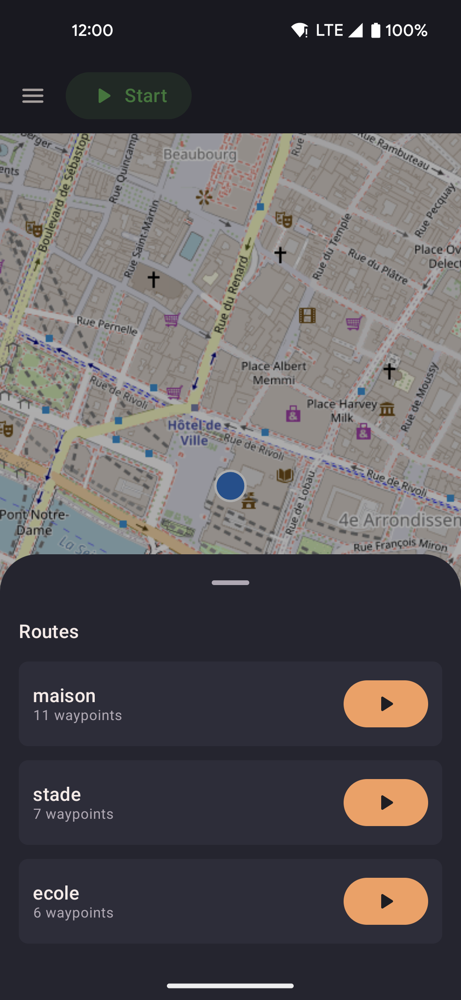
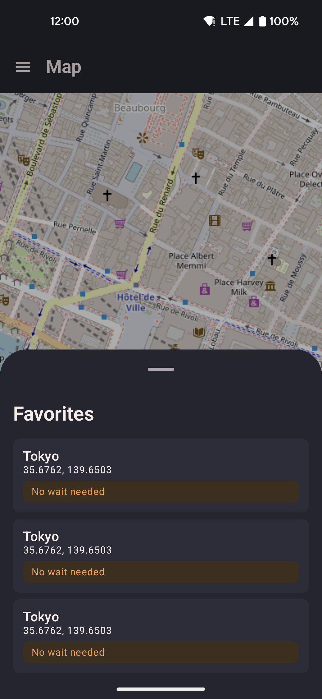
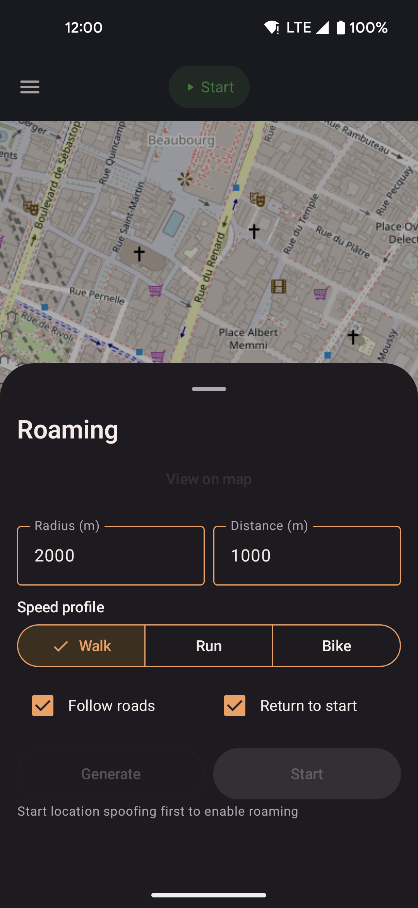

Map
OpenStreetMap displayed on an interactive map. Your spoofed location appears as a live marker that updates in real time. Use the map to set your position directly or launch routes, favorites, and roaming from the floating action buttons.
Map tiles are fetched from tile.openstreetmap.org as you pan and zoom. Tiles are cached on-device after the first load; previously viewed areas work without a network connection.

- Long-press anywhere on the map to open a sheet with "Walk here" or "Teleport here".
- Tap the start button to begin spoofing from the current map position.
- Use the re-center FAB to re-lock the camera to your moving position after panning away.
- Tap the search FAB to find a location by name and jump the map there.
Location search
Tap the search button (magnifier icon) to open a search bar powered by Nominatim. Type a place name, address, or landmark — results appear as you type. Selecting a result drops a marker on the map and centres the camera there. Only the text you type is sent to Nominatim; no GPS coordinates or identifiers are transmitted.
- Recent searches are saved on-device and shown as suggestions before you start typing.
- Selecting a search result does not move your spoofed position — long-press the marker to walk or teleport there.
- Typing coordinates directly (e.g.
35.6762, 139.6503) jumps straight to that point instead of searching Nominatim — a quick way to enter an exact location.
Click-to-move
Long-pressing any point on the map opens a bottom sheet. The options shown depend on current state:
| Action | Behaviour |
|---|---|
| Teleport here | Position jumps instantly to the tapped point in the next GPS update. No movement interpolation is applied. |
| Walk here | The simulated device moves from the current position to the tapped point at the active speed profile, along a straight line. |
| Walk here via roads | Fetches a real road route from OSRM and walks along it segment by segment at the active speed profile. Falls back to straight-line walk silently if OSRM is unreachable. |
| Add next point | Visible only while a walk-to is active. Chains a new destination onto the current walk without saving a route. The first tap turns the active walk into a multi-point sequence (current position → current target → new point); subsequent taps add more points to the end. If the current walk was "via roads", the new leg also follows roads. |
| Share this location | Fires the system share sheet with a deep-link URL for the tapped coordinate. See Share & Deep Links for details. |
When a route replay is in progress, the sheet shows different actions instead: Stop route and teleport, Stop route and walk here, and Finish route and walk here (adds the point to the end of the active route rather than stopping it).
Routes sheet
Open your saved routes and start replaying one directly from the map.

- Tap a route to preview its polyline on the map.
- Start, loop, or reverse the route without leaving the map screen.
- Active route progress is shown on the map as the position marker advances along the polyline.
Favorites sheet
Jump to any saved favorite location without navigating to the Favorites screen.

- Tap a favorite to expand its detail panel with three movement options: Set location (teleport), Walk to location (straight line), and Walk via roads (OSRM road-following).
- Saved favorites appear with their name and distance from the current spoofed position.
- Distance is calculated as straight-line distance, not road distance.
- Tap Save current location to add your current spoofed position as a new favorite directly from this sheet.
Roaming sheet
Configure and start automatic roaming — locationjoystick picks random waypoints within a radius and walks between them for you. Useful for apps that require continuous movement without manual input.

- Set a center point (defaults to current spoofed position), radius, and total distance to cover.
- Enable road-following to route each leg through OSRM, so movement stays on real walkable paths. Falls back to straight-line if OSRM is unreachable.
- Optionally return to the starting position when the distance quota is reached.
- The roaming engine picks a new random waypoint within the radius each time the previous one is reached. Waypoints are chosen uniformly at random within the circle — there is no bias toward the centre.
- Roaming runs inside the background service and continues while the screen is off.